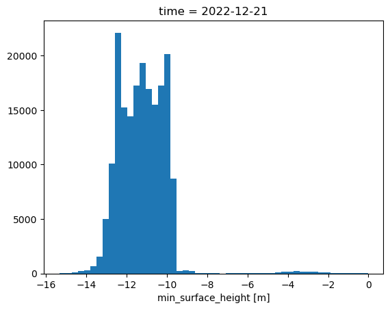
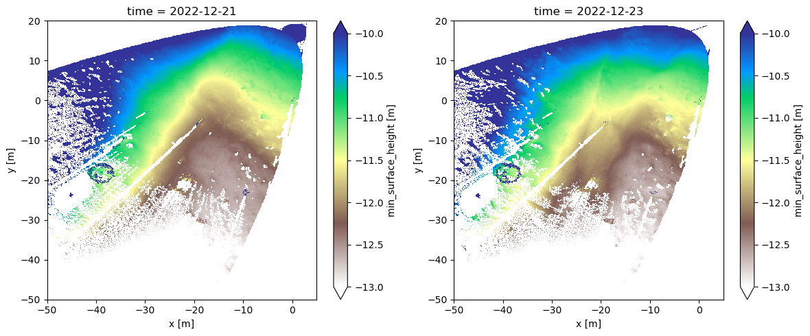
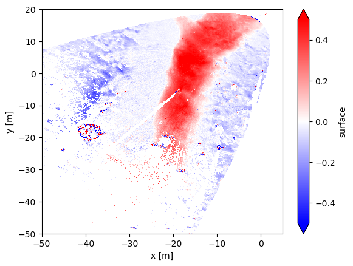
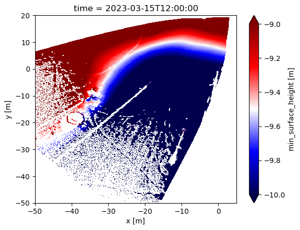
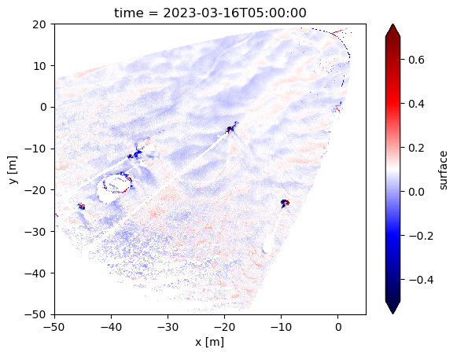
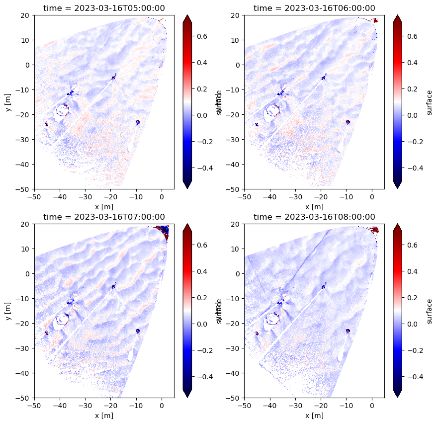
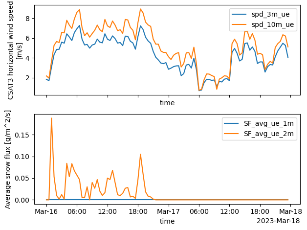

Lab 6-3: Blowing snow - snow redistribution on the site scale#
Created by Eli Schwat - February 2025
Credit to Ethan Gutmann and Marianne Cowherd, for sending me easy-to-use subset of the massive lidar archive.
import xarray as xr
import numpy as np
import altair as alt
import matplotlib.pyplot as plt
The files required for this lab are large, so they are not downloadable directly from the website.
Download them from the following link:
https://drive.google.com/drive/folders/1I8DEuj2ddT1TKXhBvVBL1lHJvbd2D_S0?usp=sharing
Redistribution of the snowpack by blowing snow - infilling of depressions#
Below, we open a lidar dataset. The lidar was mounted at 10 meters above the ground, pointing at an angle towards the ground. The dataset contains values of “distance from the lidar”.
To get the file below, it must be downloaded from a google drive location. It is too large to store in the website github repository. Download the file at the link below, and put it in the data directory.
https://drive.google.com/drive/folders/1xMURqS5y3tP0hofK9RQ5nYI8oh6E53QT?usp=share_link
ds = xr.open_dataset('../data/dec22_l1_clip.nc')
---------------------------------------------------------------------------
KeyError Traceback (most recent call last)
File /opt/hostedtoolcache/Python/3.11.14/x64/lib/python3.11/site-packages/xarray/backends/file_manager.py:219, in CachingFileManager._acquire_with_cache_info(self, needs_lock)
218 try:
--> 219 file = self._cache[self._key]
220 except KeyError:
File /opt/hostedtoolcache/Python/3.11.14/x64/lib/python3.11/site-packages/xarray/backends/lru_cache.py:56, in LRUCache.__getitem__(self, key)
55 with self._lock:
---> 56 value = self._cache[key]
57 self._cache.move_to_end(key)
KeyError: [<class 'netCDF4._netCDF4.Dataset'>, ('/home/runner/work/snow-hydrology/snow-hydrology/book/modules/data/dec22_l1_clip.nc',), 'r', (('clobber', True), ('diskless', False), ('format', 'NETCDF4'), ('persist', False)), 'cf3c96c1-91b7-4749-a151-aed619437b74']
During handling of the above exception, another exception occurred:
FileNotFoundError Traceback (most recent call last)
Cell In[2], line 1
----> 1 ds = xr.open_dataset('../data/dec22_l1_clip.nc')
File /opt/hostedtoolcache/Python/3.11.14/x64/lib/python3.11/site-packages/xarray/backends/api.py:607, in open_dataset(filename_or_obj, engine, chunks, cache, decode_cf, mask_and_scale, decode_times, decode_timedelta, use_cftime, concat_characters, decode_coords, drop_variables, create_default_indexes, inline_array, chunked_array_type, from_array_kwargs, backend_kwargs, **kwargs)
595 decoders = _resolve_decoders_kwargs(
596 decode_cf,
597 open_backend_dataset_parameters=backend.open_dataset_parameters,
(...) 603 decode_coords=decode_coords,
604 )
606 overwrite_encoded_chunks = kwargs.pop("overwrite_encoded_chunks", None)
--> 607 backend_ds = backend.open_dataset(
608 filename_or_obj,
609 drop_variables=drop_variables,
610 **decoders,
611 **kwargs,
612 )
613 ds = _dataset_from_backend_dataset(
614 backend_ds,
615 filename_or_obj,
(...) 626 **kwargs,
627 )
628 return ds
File /opt/hostedtoolcache/Python/3.11.14/x64/lib/python3.11/site-packages/xarray/backends/netCDF4_.py:771, in NetCDF4BackendEntrypoint.open_dataset(self, filename_or_obj, mask_and_scale, decode_times, concat_characters, decode_coords, drop_variables, use_cftime, decode_timedelta, group, mode, format, clobber, diskless, persist, auto_complex, lock, autoclose)
749 def open_dataset(
750 self,
751 filename_or_obj: T_PathFileOrDataStore,
(...) 768 autoclose=False,
769 ) -> Dataset:
770 filename_or_obj = _normalize_path(filename_or_obj)
--> 771 store = NetCDF4DataStore.open(
772 filename_or_obj,
773 mode=mode,
774 format=format,
775 group=group,
776 clobber=clobber,
777 diskless=diskless,
778 persist=persist,
779 auto_complex=auto_complex,
780 lock=lock,
781 autoclose=autoclose,
782 )
784 store_entrypoint = StoreBackendEntrypoint()
785 with close_on_error(store):
File /opt/hostedtoolcache/Python/3.11.14/x64/lib/python3.11/site-packages/xarray/backends/netCDF4_.py:529, in NetCDF4DataStore.open(cls, filename, mode, format, group, clobber, diskless, persist, auto_complex, lock, lock_maker, autoclose)
525 else:
526 manager = CachingFileManager(
527 netCDF4.Dataset, filename, mode=mode, kwargs=kwargs, lock=lock
528 )
--> 529 return cls(manager, group=group, mode=mode, lock=lock, autoclose=autoclose)
File /opt/hostedtoolcache/Python/3.11.14/x64/lib/python3.11/site-packages/xarray/backends/netCDF4_.py:429, in NetCDF4DataStore.__init__(self, manager, group, mode, lock, autoclose)
427 self._group = group
428 self._mode = mode
--> 429 self.format = self.ds.data_model
430 self._filename = self.ds.filepath()
431 self.is_remote = is_remote_uri(self._filename)
File /opt/hostedtoolcache/Python/3.11.14/x64/lib/python3.11/site-packages/xarray/backends/netCDF4_.py:538, in NetCDF4DataStore.ds(self)
536 @property
537 def ds(self):
--> 538 return self._acquire()
File /opt/hostedtoolcache/Python/3.11.14/x64/lib/python3.11/site-packages/xarray/backends/netCDF4_.py:532, in NetCDF4DataStore._acquire(self, needs_lock)
531 def _acquire(self, needs_lock=True):
--> 532 with self._manager.acquire_context(needs_lock) as root:
533 ds = _nc4_require_group(root, self._group, self._mode)
534 return ds
File /opt/hostedtoolcache/Python/3.11.14/x64/lib/python3.11/contextlib.py:137, in _GeneratorContextManager.__enter__(self)
135 del self.args, self.kwds, self.func
136 try:
--> 137 return next(self.gen)
138 except StopIteration:
139 raise RuntimeError("generator didn't yield") from None
File /opt/hostedtoolcache/Python/3.11.14/x64/lib/python3.11/site-packages/xarray/backends/file_manager.py:207, in CachingFileManager.acquire_context(self, needs_lock)
204 @contextmanager
205 def acquire_context(self, needs_lock: bool = True) -> Iterator[T_File]:
206 """Context manager for acquiring a file."""
--> 207 file, cached = self._acquire_with_cache_info(needs_lock)
208 try:
209 yield file
File /opt/hostedtoolcache/Python/3.11.14/x64/lib/python3.11/site-packages/xarray/backends/file_manager.py:225, in CachingFileManager._acquire_with_cache_info(self, needs_lock)
223 kwargs = kwargs.copy()
224 kwargs["mode"] = self._mode
--> 225 file = self._opener(*self._args, **kwargs)
226 if self._mode == "w":
227 # ensure file doesn't get overridden when opened again
228 self._mode = "a"
File src/netCDF4/_netCDF4.pyx:2521, in netCDF4._netCDF4.Dataset.__init__()
File src/netCDF4/_netCDF4.pyx:2158, in netCDF4._netCDF4._ensure_nc_success()
FileNotFoundError: [Errno 2] No such file or directory: '/home/runner/work/snow-hydrology/snow-hydrology/book/modules/data/dec22_l1_clip.nc'
ds.sel(time='20221221 0000')['surface'].plot.hist(bins=50)
plt.show()

Looking at a histogram of values, we can see that the distribution of values ranges from -14 to -9, which makes sense for the lidar mounted at 10m, pointed at an angle towards the ground.
While values of “distance from the ground” are hard to interpret, if we subtract two snapshots from eachother, we will calculate the change in snow-surface elevation.
Below, we do just this, calculating the difference in snow surface elevation between Dec 21 12am and Dec 23 12am, which according to Lundquist et al., 2024 (from earlier in the class), is the timing of a major blowing snow event that filled in a depression at the field site.
fig, axes = plt.subplots(1,2, figsize=(12,5))
ds.sel(time='20221221 0000')['surface'].plot(vmin=-13, vmax=-10, ax=axes[0], cmap='terrain_r')
ds.sel(time='20221223 0000')['surface'].plot(vmin=-13, vmax=-10, ax=axes[1], cmap='terrain_r')
plt.tight_layout()

(ds.sel(time='20221223 0000')['surface'] - ds.sel(time='20221221 0000')['surface']).plot(
vmin=-0.5, vmax=0.5, cmap='bwr'
)
<matplotlib.collections.QuadMesh at 0x17a23ee60>

We can see the depression infilling over 48 hours above. This is also shown in Lundquist et al. (2024).
Blowing snow - snow dunes#
Below, we open some lidar data from March 23, a day on which we observed the formation and migration of snow dunes across the Kettle Ponds site.
ds = xr.open_dataset('~/Downloads/mar23_l1_clip.nc')
If we look at a single snapshot, we see that the snow surface at Kettle Ponds in March was sloping.
single_snapshot = ds.sel(time = ds.time[12])
single_snapshot['surface'].plot(vmin=-10, vmax=-9, cmap='seismic')
<matplotlib.collections.QuadMesh at 0x17a511270>

It’s hard to see what’s going on with the snow surface here.
What we want to look at is deviations around that mean sloping surface.
We can calculate this. First, we calculate the mean across time for each pixel. Then we subtract that pixel-wise mean from a timestamp, which will reveal the snow surface topgraphy.
# Calculate pixel-wise mean from the entire dataset
pixel_wise_mean = np.nanmean(ds['surface'], axis=(0))
# Select a specific time stamp from the dataset
specific_timestamp = ds['surface'].sel(time = ds.time[19])
# Subtract the pixel-wise mean from the specific timestamp
# We call this the "normalized" dataset
normed = specific_timestamp - pixel_wise_mean
/var/folders/x_/2h52bcjx2px15bhmdpdd748h0000gn/T/ipykernel_18480/1597827072.py:2: RuntimeWarning: Mean of empty slice
pixel_wise_mean = np.nanmean(ds['surface'], axis=(0))
normed.plot(vmin=-0.5, vmax=0.7, cmap='seismic')
<matplotlib.collections.QuadMesh at 0x17a5d3640>

Woah! We can see snow dunes!
How can we tell if these dunes are migrating? Let’s plot multiple snapshots, sequential in time, next to eachother.
specific_timestamp_1 = ds['surface'].sel(time = ds.time[19])
normed_1 = specific_timestamp_1 - pixel_wise_mean
specific_timestamp_2 = ds['surface'].sel(time = ds.time[20])
normed_2 = specific_timestamp_2 - pixel_wise_mean
specific_timestamp_3 = ds['surface'].sel(time = ds.time[21])
normed_3 = specific_timestamp_3 - pixel_wise_mean
specific_timestamp_4 = ds['surface'].sel(time = ds.time[22])
normed_4 = specific_timestamp_4 - pixel_wise_mean
normed
<xarray.DataArray 'surface' (y: 700, x: 550)> Size: 3MB
array([[nan, nan, nan, ..., nan, nan, nan],
[nan, nan, nan, ..., nan, nan, nan],
[nan, nan, nan, ..., nan, nan, nan],
...,
[nan, nan, nan, ..., nan, nan, nan],
[nan, nan, nan, ..., nan, nan, nan],
[nan, nan, nan, ..., nan, nan, nan]])
Coordinates:
* y (y) float64 6kB -49.95 -49.85 -49.75 -49.65 ... 19.75 19.85 19.95
* x (x) float64 4kB -49.95 -49.85 -49.75 -49.65 ... 4.65 4.75 4.85 4.95
time datetime64[ns] 8B 2023-03-16T05:00:00fig, axes = plt.subplots(2,2, figsize=(10,10))
normed_1.plot(vmin=-0.5, vmax=0.7, cmap='seismic', ax=axes.flatten()[0])
normed_2.plot(vmin=-0.5, vmax=0.7, cmap='seismic', ax=axes.flatten()[1])
normed_3.plot(vmin=-0.5, vmax=0.7, cmap='seismic', ax=axes.flatten()[2])
normed_4.plot(vmin=-0.5, vmax=0.7, cmap='seismic', ax=axes.flatten()[3])
<matplotlib.collections.QuadMesh at 0x17a925390>

It’s still kind of hard to tell… let’s create a GIF from all timestamps in our dataset.
import imageio
# ChatGPT wrote the function below... pretty cool
# Define a function named create_gif_from_plots that takes two arguments: ds (lidar dataset) and output_gif (name of the output GIF file)
def create_gif_from_plots(ds, output_gif):
# Create an empty list to store the filenames of the plot images
filenames = []
# Iterate over all time steps in the lidar dataset
for i, time_step in enumerate(ds.time):
# Normalize the data by subtracting the pixel-wise mean from the surface values at the current time step
normed = ds.sel(time=time_step)['surface'] - np.nanmean(ds['surface'], axis=(0))
# Create a new plot figure
plt.figure()
# Plot the normalized data using a colormap and set the color range
normed.plot(vmin=-0.5, vmax=0.7, cmap='seismic')
# Set the title of the plot to indicate the current time step
plt.title(f'Time step: {i}')
# Save the plot as an image file with a filename that includes the current time step index
filename = f'plot_{i}.png'
plt.savefig(filename)
# Append the filename to the list of filenames
filenames.append(filename)
# Close the plot figure to free up memory
plt.close()
# Create a GIF from the saved image files
with imageio.get_writer(output_gif, mode='I', duration=0.5) as writer:
# Iterate over the filenames of the plot images
for filename in filenames:
# Read the image file
image = imageio.imread(filename)
# Append the image to the GIF writer
writer.append_data(image)
# Optionally, remove the image files after creating the GIF
for filename in filenames:
os.remove(filename)
# Example usage
# Call the create_gif_from_plots function with the lidar dataset 'ds' as the argument
create_gif_from_plots(ds, 'lidar_timeseries.gif')
/var/folders/x_/2h52bcjx2px15bhmdpdd748h0000gn/T/ipykernel_18480/60621161.py:11: RuntimeWarning: Mean of empty slice
normed = ds.sel(time=time_step)['surface'] - np.nanmean(ds['surface'], axis=(0))
/var/folders/x_/2h52bcjx2px15bhmdpdd748h0000gn/T/ipykernel_18480/60621161.py:31: DeprecationWarning: Starting with ImageIO v3 the behavior of this function will switch to that of iio.v3.imread. To keep the current behavior (and make this warning disappear) use `import imageio.v2 as imageio` or call `imageio.v2.imread` directly.
image = imageio.imread(filename)
from IPython.display import Image
Image(url='lidar_timeseries.gif')

Check out the gif - do you see the dune migration? Cool!
What are the wind speeds during this day? What did the blowing snow fluxes look like?
sos_file = "../data/sos_full_dataset_30min.nc"
sos_dataset = xr.open_dataset(sos_file)
VARIABLES = [
'spd_1m_ue',
'spd_3m_ue',
'spd_10m_ue',
'SF_avg_1m_ue',
'SF_avg_2m_ue'
]
ds.time[19].values
numpy.datetime64('2023-03-16T05:00:00.000000000')
fig, axes = plt.subplots(2,1, sharex=True)
sos_dataset.sel(time = slice('2023-03-16', '2023-03-17'))['spd_3m_ue'].plot(label='spd_3m_ue', ax=axes[0])
sos_dataset.sel(time = slice('2023-03-16', '2023-03-17'))['spd_10m_ue'].plot(label='spd_10m_ue', ax=axes[0])
sos_dataset.sel(time = slice('2023-03-16', '2023-03-17'))['SF_avg_1m_ue'].plot(label='SF_avg_ue_1m', ax=axes[1])
sos_dataset.sel(time = slice('2023-03-16', '2023-03-17'))['SF_avg_2m_ue'].plot(label='SF_avg_ue_2m', ax=axes[1])
axes[0].legend()
axes[1].legend()
plt.tight_layout()

Same as above but using altair
sos_df = sos_dataset[[
'spd_3m_ue', 'spd_10m_ue', 'SF_avg_1m_ue', 'SF_avg_2m_ue'
]].to_dataframe().loc['2023-03-16': '2023-03-17'].reset_index()
base = alt.Chart(sos_df).mark_line().encode(
alt.X('time:T'),
alt.Y('value:Q'),
alt.Color('key:N')
).properties(width=500, height=200)
base.transform_fold(['spd_3m_ue', 'spd_10m_ue']) &\
base.transform_fold(['SF_avg_1m_ue', 'SF_avg_2m_ue'])
These wind speeds are consistent with known wind speeds for snow dune formation (5-8 m/s)